icossymetry
go backThis whole thing started when i wanted to recreate the floor pattern in this iconic maths video,
Not Knot by the Geometry Center.
I knew i couldn't really recreate it bc it was a hyperbolic tiling, but i still tried to do
something similar.
The idea was to make the icosahedron's symmetry group
out of circle beziers, give them thickness then
project
their shadow onto a plane below it all.
1.
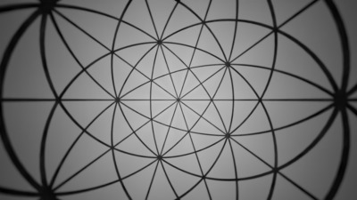2. just the projection without the icossymetry thing
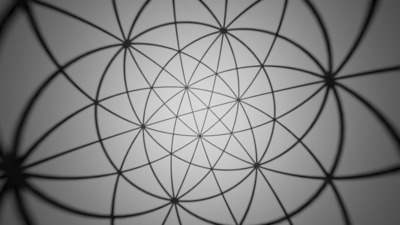3. the shadow when the ball is rotated in an arbitrary direction; also, all the curves are circles! That's because of the stereographic projection.

4. here, i've put a metal sphere right under the icossymetry ball...
i'm calling it the symmetry group. And i noticed the shadow reflected in the metal ball
as neat curvy lines, so i wanted to get a closer look:

5. oh yeah. That looks nice. And you can see the metal ball's shadow on it's own reflection!

6. a closeup shot showing some of the shadow in the back.
I wanted to use this as a
wallpaper, but my icons were on the left side, so i wanted to take another shot instead of, yk. just flipping the image.

7. hmm a little bit more of the back...

8. there we go.
If you make the icosahedral ball thing with straight lines instead of circles, you get a disdyakis triacontahedron... Thankfully blender has a mesh extra objects addon with a bunch of polyhedra including this one!
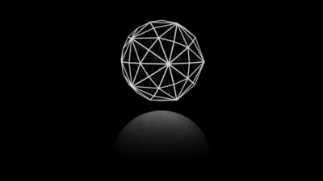9. the didsdyakis thing with a wireframe modifier and an emission material that makes it glow, another one that's transparent so you can still see the back kinda, but it's darker. Also with a smooth sphere in the bottom lit up by the polyhedron. Also also probably the start of my love for noisy renders.....
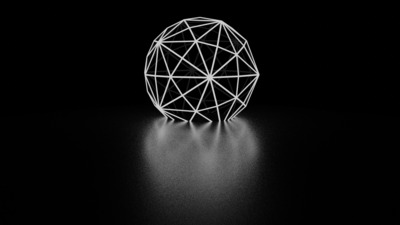10. basically the same thing but the bottom sphere is bigger and the polyhedron clips through it! Also i think the bottom sphere has a glossy material with a bit of roughness.

11. also the same thing but without the wireframe and this time lit by 2 sun lights in opposite angles.

12. same thing as 11 but with a wireframe modifier.

13. now seen from above! Nice symmetry.
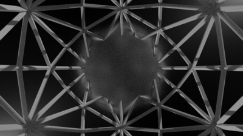14. now the camera is inside the ball just below the pillars; exactly where the light was in the earlier shadow renders! Also with a really wide angle.

15. The shadow of the thick wireframe thing.

16. 14 again but the bottom ball is almost no roughness. i think 0.1. I remember trying to look at where the spokes intersect the mirrorball, but they aren't here for some reason.

17. Just the wireframe disdyakis thing with an orthographic projection camera. It kinda looks like a dodecahedron if you squint hard enough.
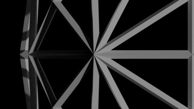18. a closeup of 10 spokes coming together!

19. it's number 9 but this time the disdyakis doesn't glow... I honestly dont know how i made this one

20. The wireframe and unwireframed disdyakises together.

21. 20 but the bit of the wireframe sticking out of the solid one is thinner. Also it's more focused on the darker band that's in the shadow of both sun lights.
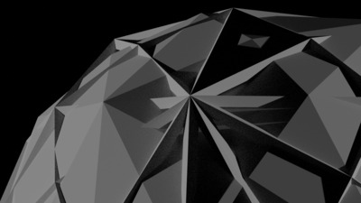22. This time the wireframe is rotated!

23. Here, i've put 2 planes crossing the wireframe vertically, but since the camera is orthographic and looking from above, we don't see the planes, just the shadow!

24. Back to the shadowy reflection renders.
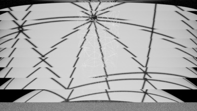25. Here's where i start to experiment more with reflections and refractions and stuff. This is a half cylinder with a glass material, so it's basicaly a lens. But the shading isn't smooth so you can see the staggered refractions! Also the symmetry ball, oops
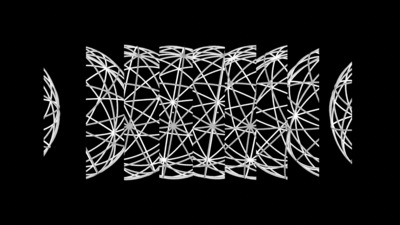26. This time i wanted to see the symmetry ball sliced up by the flat faces!

27. The same as 25 but looking downwards, i think
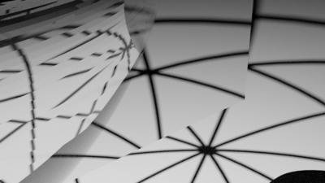28. now looking right; you can see refractions of refractions?
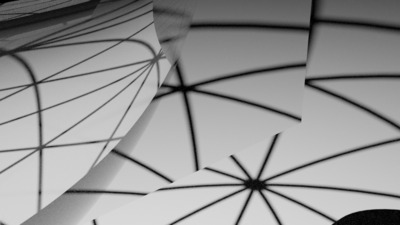29. 28 but now properly rounded!

30. I think this is just looking directly at the symmetry ball with the light at the center

31. Now i've covered the symmetry ball under a glass ball! Looks super cool and... liquidy
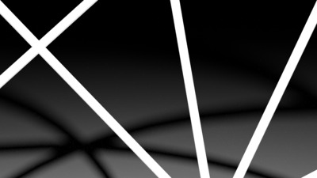32. this is what the camera saw when it was just at 0, 0, 0, and i thought it looked kinda cool so i just rendered it

33. i'm pretty sure this is looking through a glass (half?) cyllinder

34. i think the sphere now has a mixed glass and glossy material so you can see refractions AND reflections on it!

35. OK so- it's a concave half cylinder mirror looking at the symmetry ball thing, idk how to explain it properly

36. The same thing but focusing on another place, looks super liquidy again- all just from curved mirror reflections!
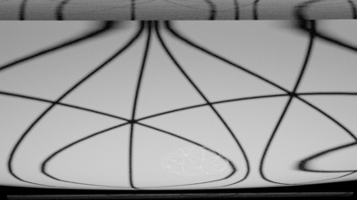37. Now looking at the shadow again, but through a REVERSE cyllinder lens, cool and curvy (but a bit pointy in a few places)

38. the reverse cyllinder lens itself, i was showing some renders to a friend so i just rendered the lens by itself to show them how i was making stuff

39. now looking through another angle
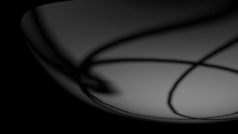40. i think this is also the reverse cyllinder lens, but you can see the pointy edges so it doesn't look TOO good...
back to top